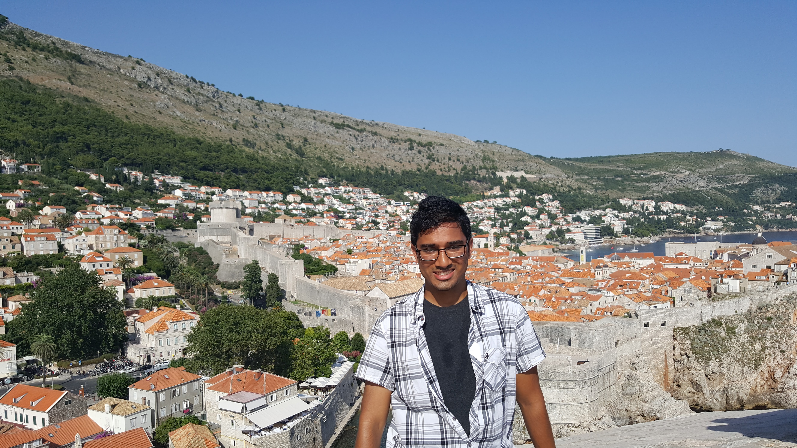
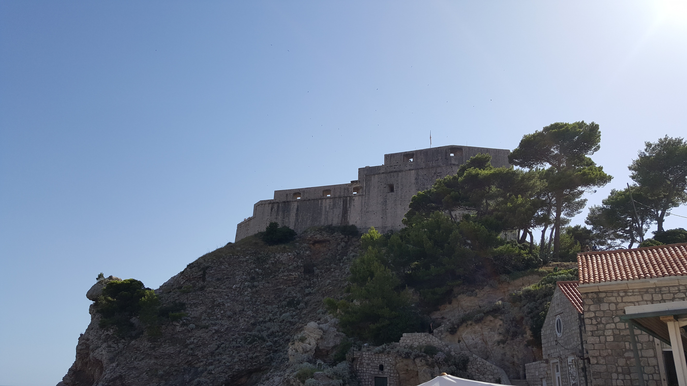
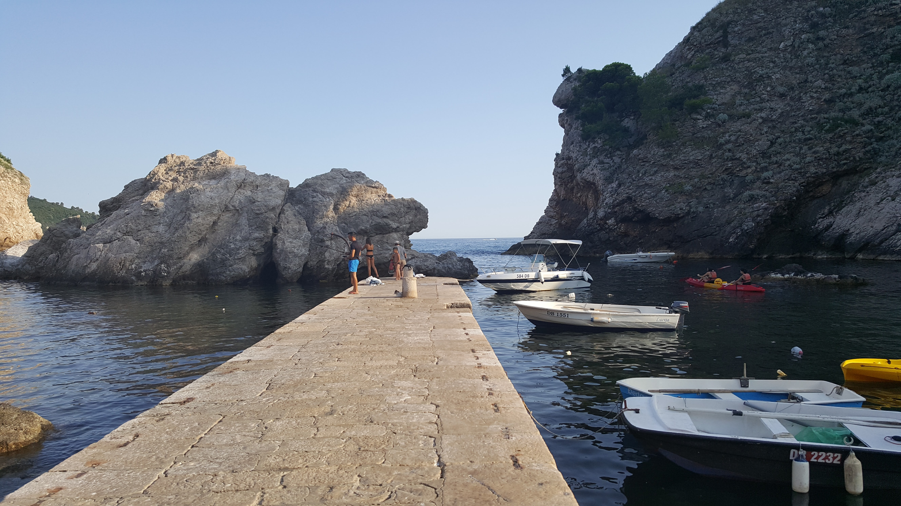
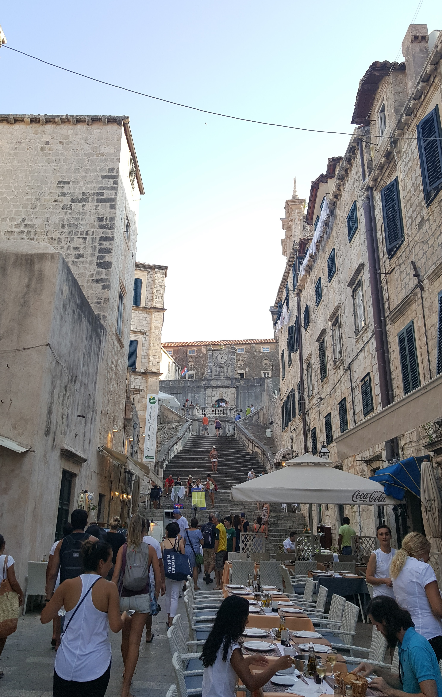
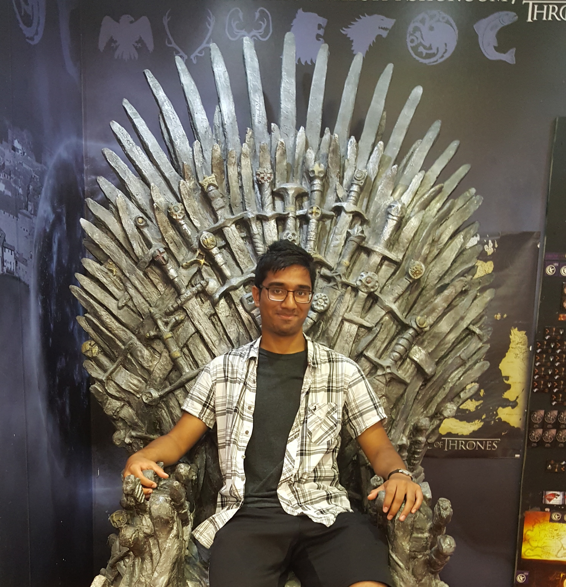

Game of Thrones
During the summer of 2016, I visited the beautiful city of Dubrovnik, located along the lower coast of Croatia.
Some may know this area better as King's Landing.
Fair Warning: This page may contain spoilers so proceed with caution.

Here is the grand castle of King's Landing. The Castle Walls are part of Dubrovnik, but the original castle atop the walls are all CGI'd in.

This is the beautiful city of Dubrovnik seen from atop the castle walls. Down below, you see the pier where Myrcella was shipped off to Dorne.

Here is a view of the pier from Cersei's perspective.

If you remember Cersei's walk of shame, here is the street that it started at. Atop these steps is the "Sept of Baelor", which is unfortunately all CGI'd in. But the rest is all the same.
Fun Fact #1: When the crew filmed here, they had to pay every restaurant as if every seat of every table was taken.
Fun Fact #2: They even paid residents living along the sides of the street for a week just to close their windows and not hang clothes outside.

And of course, I had to do this.
